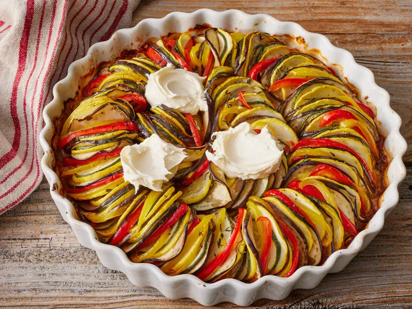

Ratatouille Recipe

Description
This Disney ratatouille recipe makes the beautiful dish served up in the movie of the same name.
Long and narrow vegetables work best. Serve with crusty bread or over a bed of brown rice, couscous, or
pasta.
Ingredients
- 1 (6 ounce) can tomato paste
- ½ onion, chopped>
- ¼ cup minced garlic
- ¾ cup water
- 4 tablespoons olive oil, divided
- salt and ground black pepper to taste
- 1 small eggplant, trimmed and very thinly sliced
- 1 zucchini, trimmed and very thinly sliced
- 1 yellow squash, trimmed and very thinly sliced
- 1 red bell pepper, cored and very thinly sliced
- 1 yellow bell pepper, cored and very thinly sliced
- 1 teaspoon fresh thyme leaves, or to taste
- 3 tablespoons mascarpone cheese
Steps to do
- Preheat the oven to 375 degrees F (190 degrees C).
- Spread tomato paste onto the bottom of a 10-inch square baking dish. Sprinkle with onion and garlic.
- Stir in water and 1 tablespoon olive oil until thoroughly combined. Season with salt and pepper.
- Tomato paste spread on the bottom of the baking dish.
- Tomato pasted mixed with onions and garlic.
- Arrange alternating slices of eggplant, zucchini, yellow squash, red bell pepper, and yellow bell pepper, starting at the outer edge of the dish and working concentrically towards the center. Overlap slices a little to display colors.
- Alternating eggplant, zucchini, yellow squash and bell peppers around the baking dish.
- Drizzle vegetables with remaining 3 tablespoons olive oil; season with salt and pepper. Sprinkle with thyme leaves. Cover vegetables with a piece of parchment paper cut to fit inside.
- Finish adding the vegetables, and drizzle with olive oil, seasoning with salt, pepper and thyme leaves.
- Disney's Ratatouille covered with parchment paper to fit inside the baking dish.
- Bake in the preheated oven until vegetables are roasted and tender, about 45 minutes. Serve with dollops of mascarpone cheese.